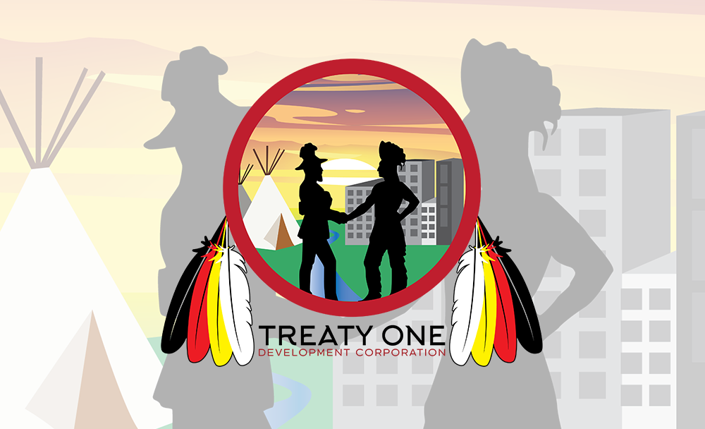

Treaty 1: History
What are treaties with Indigenous Peoples
Treaties are agreements made between the Government of Canada, Indigenous groups and often provinces and territories that define ongoing rights and obligations on all sides.
These agreements set out continuing treaty rights and benefits for each group.
Treaty rights and Aboriginal rights, commonly referred to as Indigenous rights, are recognized and affirmed in section 35 of the Constitution Act, 1982 and are also a key part of the United Nations Declaration on the Rights of Indigenous Peoples, which the Government of Canada has committed to implement in partnership with Indigenous Peoples.
Treaties with Indigenous Peoples include both:
historic treaties with First Nations.
modern treaties, also called comprehensive land claim agreements with Indigenous groups.

Honouring treaty relationships
Indigenous Peoples have lived on the land we now call Canada for thousands of years, with their own unique cultures, identities, traditions, languages and institutions. Early partnerships between Indigenous nations and colonial governments were forged through treaties as well as trade and military alliances and were based on mutual respect and co-operation. Over many centuries these relationships were eroded by colonial and paternalistic policies that were enacted into laws. Canada has embarked on a journey of reconciliation between Indigenous and non-Indigenous Peoples. It is a necessary journey to address a long history of colonialism and the scars it has left.


Why Sign Treaties?
The Treaty of West Canada transferred ownership of what is now modern farmland to the Canadian government, opening the western region to settlement and agricultural development. Several motivations prompted the Canadian federal government to act to secure control of the Northwest Territories. First, the potential threat from the United States was growing; there were concerns that the US might covet the vast western lands claimed by Britain if no action was taken. Second, the Conservative government, led by John A. McDonald, had long dreamed of building a transcontinental railway. Before that could be achieved, the government needed to possess the land. Among the native inhabitants of the northwest:First Nations and Métis,there existed a great uneasiness and anxiety. They communicated strongly that difficulties would result if they were not negotiated with and compensated for the use of their land and its resources prior to settlement. Yet they could not help but admit that the lifestyle that had served them for centuries would not sustain them in the changing times they were facing. Aboriginal people were therefore interested in securing a more certain future for themselves and generations to come. For its part, Canada recognised that western Aboriginal groups were Nations unto themselves: the government admitted that Aboriginal title to the land they occupied existed and that it ought to be dealt with before it was made available for settlers. Canada’s only option was to settle with Native communities peacefully: they did not have the military strength to force their will. In 1870 Adams Archibald was appointed Lieutenant-Governor of the new province of Manitoba and the North-West Territories. Archibald was not authorised to make agreements with concerned First Nations, but assured them that an Indian Commissioner would soon visit with them to negotiate a treaty.
An Agreement is Reached
Following these verbal concessions, Treaty No. 1 was signed on August 3, 1871. The written version of the treaty stipulated that each tribe should designate a private reservation, the size of which would be proportional to the tribe's population. Every man, woman, child, and child would receive a grant of $3 and an equivalent annuity. The treaty also stipulated that, upon request from the tribes, schools would be established and staffed with teachers on each reservation. Furthermore, the treaty prohibited the sale of alcohol on the reservations and promised a census of all Indigenous people residing within the treaty-designated areas. In exchange, the Indigenous people agreed—in the wording of the written document—to "cede, relinquish, surrender, and transfer" all their land to Her Majesty the Queen. At the signing of the treaty, the signatories pledged that they and their people would "maintain peace with Her Majesty the Queen's white subjects, not interfere with their property, nor harass them in any way." After the signing of Treaty No. 1, the commissioners traveled to the Manitoba outpost at the northwestern end of Lake Manitoba to meet with several Ojibwa tribes. These tribes were aware of the treaty signed in Lower Gariburg and wished to agree to the same terms. The second treaty was signed on August 21. At this point, land of slightly less than 137,000 square kilometers was transferred to government jurisdiction.
Lessons Learned?
The process of negotiating Treaty 1 and 2 brought important lessons. The government learned that First Nations were aggressive negotiators who could not be expected to simply sign a document that had been drawn up by officials and put in front of them. The problems that rose out of the unfulfilled outside promises were only the beginning of what came to define the relationship between First Nations and the government over the following decades. As subsequent treaties were signed, Ottawa showed increasing disinterest to provide adequate provisions to First Nations to facilitate their successful economic shift from subsistence off the land to sedentary agriculture. This caused enormous hardship among First Nations peoples, and sowed seeds of disappointment and distrust. The Numbered Treaties, in addition to the passage of the Indian Act in 1876, marked the beginning of a new relationship between western First Nations and the Canadian government. The following decades of bureaucracy, residential schools and resource extraction continued to put First Nations in a disadvantaged position. It was not an arrangement that First Nations necessarily knowingly entered into. They hadn’t meant to lose control over their lands and their lives. What they had endeavoured to do was safeguard their future, not put it in the hands of individual Indian Agents and bureaucrats in Ottawa. Treaty 1 and 2 indicated to First Nations that the government could not be trusted to act in good faith towards their treaty partners. First Nations communities never considered themselves “defeated” through the treaty negotiations. They are still fighting hard to defend their sovereignty. What do they want? Respect, honesty and appreciation for their status.